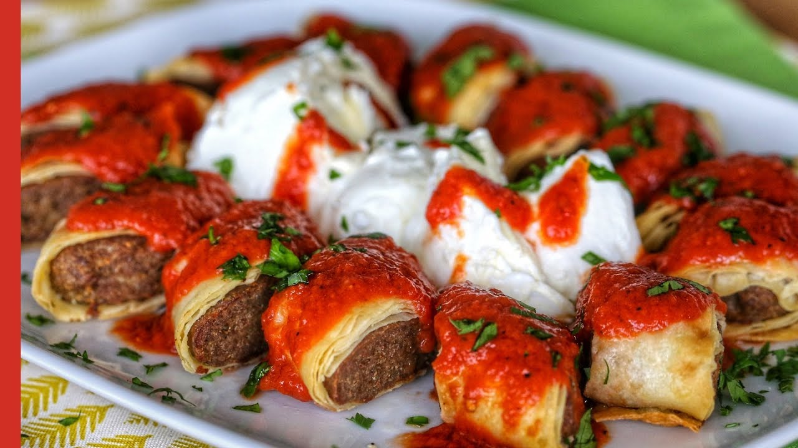

Beyti Kebabi

Description
Beyti kebabi is a popular Turkish dish that consists of ground beef or lamb, seasoned with various spices and herbs, wrapped in a thin layer of lavash or yufka (Turkish flatbread), and then grilled or baked.
The wrapped meat is typically shaped like a cylinder or a roll.
After grilling or baking, the beyti kebab is sliced into smaller pieces and served with a yogurt-based sauce, such as cacik, and tomato-based sauce.
It is often accompanied by rice pilaf, grilled vegetables, and a salad.
Beyti kebabi is known for its rich flavors and is a popular dish in Turkish cuisine, often enjoyed as a main course for lunch or dinner.
Ingredients
- 500g ground beef or lamb
- 1 onion, chopped
- 2 cloves of garlic, minced
- 1 teaspoon paprika
- 1 teaspoon cumin
- salt and pepper
- lavash/yufka
- butter
- serving with yogurt, tomato sauce, and rice
Steps
- In a bowl, combine the ground beef or lamb with finely chopped onion, minced garlic, paprika, cumin, salt, and pepper. Mix well to combine all the ingredients evenly.
- Take a portion of the meat mixture and shape it into a long, cylindrical or roll-like shape, similar to a sausage. Repeat with the remaining mixture.
- Place a sheet of lavash or yufka flatbread on a clean surface.
Place one of the meat cylinders along one edge of the flatbread and roll it up tightly, enclosing the meat completely. Repeat with the remaining meat and flatbread.
- Place the wrapped meat rolls in the skillet and cook, turning occasionally, until the meat is cooked through and the flatbread is crispy and golden brown on all sides.
- Remove the cooked Beyti Kebabs from the skillet and let them cool slightly.
Slice the Beyti Kebabs into smaller pieces and arrange them on a serving platter.
Serve the Beyti Kebabs with a side of yogurt, tomato sauce, and rice pilaf.